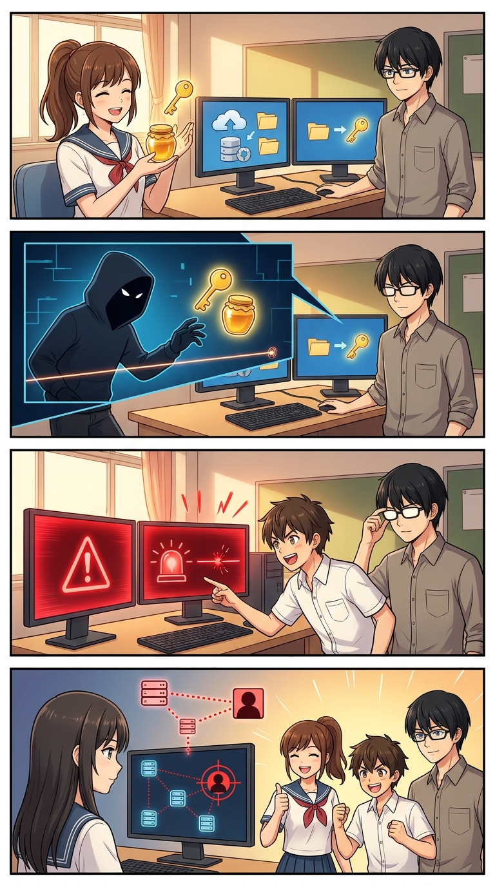
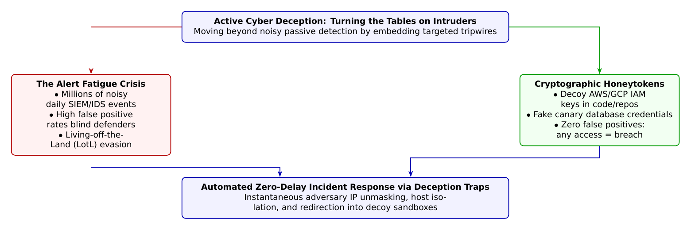

🎨 4コマ漫画挿絵（文字なし）
AI高解像度生成
▲ 【挿絵】青葉台高校 情報科学部＆帝都科学大学サイバーディフェンス・ラボでの実践シーン
💬 4コマ漫画キャラクターセリフ (Story Dialogue Script)
日・英バイリンガル (JA / EN)[蓮]「侵入検知システム（IDS）のアラート疲れは、世界中のセキュリティ担当者の最大の悩みだね」
[Ren] "Alert fatigue from detection systems is indeed the single biggest headache for defenders worldwide!"
[葵]「えっ！？ 泥棒のために偽の合鍵を置いておくの！？ それでどうして侵入が防げるの！？」
[Aoi] "What!? Leaving fake keys for thieves on purpose!? How does that protect our systems!?"
[蓮]「使われた瞬間に攻撃者のIP、使用ツール、偵察経路が丸裸になってクラウド側で即座に遮断できるんだね！」
[Ren] "Instantly exposing the intruder's IP, tooling, and lateral path, triggering immediate cloud isolation!"
[全員]「欺瞞の知恵で攻撃者を出し抜き、私たちはサイバー空間の主導権を奪還する！」
[All] "Outsmarting adversaries with strategic deception, we reclaim total control of cyberspace!"
📖 小説本文
冬の静かな放課後、青葉台高校の情報科学部室。大型ディスプレイには、部室のローカルサーバとクラウド環境に日々押し寄せる何万件ものログイベントが、滝のような勢いで流れていた。
赤い「WARNING」や黄色の「CAUTION」の文字が画面を埋め尽くしている。
「……うう、もう目がチカチカする！」
橘葵が頭を抱えて椅子にもたれかかった。 「毎日何千件もアラートが鳴るけど、その99%はただのクローラーのスキャンだったり、部員の打ち間違いだったりするじゃない。どれが『本物のハッカーの侵入』なのか、アラートを1件ずつ調べるだけで日が暮れちゃうよ！」
「それが、現代のSOC（セキュリティ監視センタ）を苦しめている**『アラート疲弊（Alert Fatigue）』**ですよ、葵先輩」
神崎蓮がログ解析ツールを見ながら溜息をついた。 「どんなに高価な侵入検知システム（IDS）やSIEMを入れても、誤検知（False Positive）の山に埋もれてしまい、肝心の巧妙な標的型攻撃やランサムウェアの潜入を見落としてしまう……。守る側は常に数万の扉をすべて完璧に見張らなければならないのに、攻める側はどこか1つの隙間をこじ開ければ勝てるなんて、不公平すぎます！」
「なら、その非対称な関係を逆転させてみようか」
ドアを開けて入ってきた城崎悠真が、あたたかいカフェオレを置きながら不敵な笑みを浮かべた。 「泥棒が入ってくるのをビクビク待つのはやめだ。**『侵入者が絶対に我慢できずに手を伸ばしてしまう偽の鍵（宝物）』**を、社内サーバやGitリポジトリの片隅にわざと撒き餌として置いておくんだ。それが、横浜国立大学SPIRAL（吉岡克成教授ら）のハニーポット研究の系譜を受け継ぐ先端技術――**『サイバー欺瞞（Cyber Deception）と暗号学的ハニートークン（Honeytokens）』**だよ」
白石結衣がホワイトボードに鮮やかな罠のフローチャートを描き始めた。 「守備側が攻撃者を能動的に騙し、心理的トラップにかけるディセプション技術ですね！」
---
📊 セキュリティ構造図解 (TikZ LuaLaTeX生成)
国家安全基準・工学図解
▲ 【技術構造図】IPAデジタルスキル標準・国際規格に準拠した仕組みのモデル化